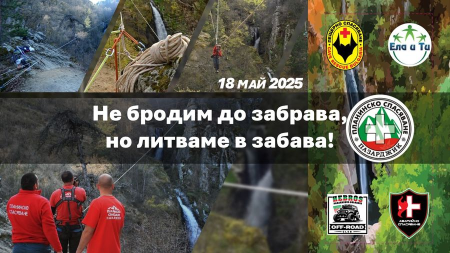

Не бродим до забрава, но литваме в забава!
Събитието е само за хора с увреждания и други участници няма да бъдат допускани да се спускат по въжените елементи!
Както почти всяка година, така и в настоящата, сме предвидили да осъществим едно събитие в подкрепа на хората в неравностойно положение. То ще бъде в посока да покажем част от прекрасната природа на същите тези хора, които сами никога не биха успели да се насладят на прелестите ѝ.
Този път сме решили да ги заведем на Фотинските водопади, едни от най-красивите водопади в България, представляващи каскада от три водопада с обща височина около 30 метра.
Кой го организира?
Инициативата се организира съвместно от Аварийно спасяване Пловдив , Ела и ти , Оф Роуд клуб Хеброс екстрим Пещерно спасяване и Планинско спасяване - област Пазарджик .
Кога е събитието?
Събитието ще се проведе на 18 май 2025 година.
Къде?
Автомобилите се оставят в село Фотиново, а до самите водопади ще се стига съвместно.
Ако вие сте човек с физически увреждания и искате да се включите в инициативата ни, трябва да можете да стигнете до село Фотиново с ваш транспорт. Имаме лимит от 20 човека, защото придвижването по тролеите е много времеемко и ще стане твърде късно, ако хората са повече. След достигане на лимита, формите за записване ще бъдат заключени.
Ако не можете да си организирате транспорт до село Фотиново, моля да пишете на Вайбър на следния номер, като ние ще се опитаме да ви намерим доброволец, който да ви докара, но не обещаваме:
Номер за контакт през Вайбър: Ана
Имаме работа и за ДОБРОВОЛЦИ!
Планът е следният:
1) 17 май 2025
Спасители от Пещерно спасяване и Планинско спасяване - област Пазарджик ще отидат на 17 май в района на водопадите, където ще бивакуват и ще подготвят и тестват необходимите технически съоръжения, същевременно ще обезопасят с въже пътеката до водопад 1;
2) 18 май 08:00 - ДОБРОВОЛЦИТЕ, които ще помагат за реализиране на плана трябва, да са при водопадите, разпределението на задачите ще се осъществи на място;
3) Джиповете за извозване на хората, които не могат да ходят сами, трябва да са в центъра на Фотиново най-късно в 08:30, където ще ги чака координатор, за да разясни плана за транспортиране;
4) около 08:30 очакваме първите хора с увреждания да пристигнат във Фотиново и трябва да бъдат транспортирани до водопадите от джиповете;
при беседката на водопадите ще има пункт за записване и попълване на декларации, където ще се записват хората, които ще бъдат спуснати, чрез въжени тролеи над трите водопада, до панорамната площадка;
там същите ще бъдат разкачани и оставени на стол, до пристигане на следващия човек, след което ще се прикачат към тролея и ще бъдат извличани обратно;
хората, чиито увреждания са такива, че могат да ходят, ще бъдат спускани, след което ще се придвижат на собствен ход по туристическата пътека до пункта за записване;
след преминаването на последния човек с увреждане, тролеите ще се демонтират, а джиповете поетапно ще извозват хората към село Фотиново.
За доброволците
За допълнителна информация
Ако имате някакви въпроси относно събитието, пишете ни! See less
Batak, Bulgaria
Фотински Водопади
41.883345, 24.350454
